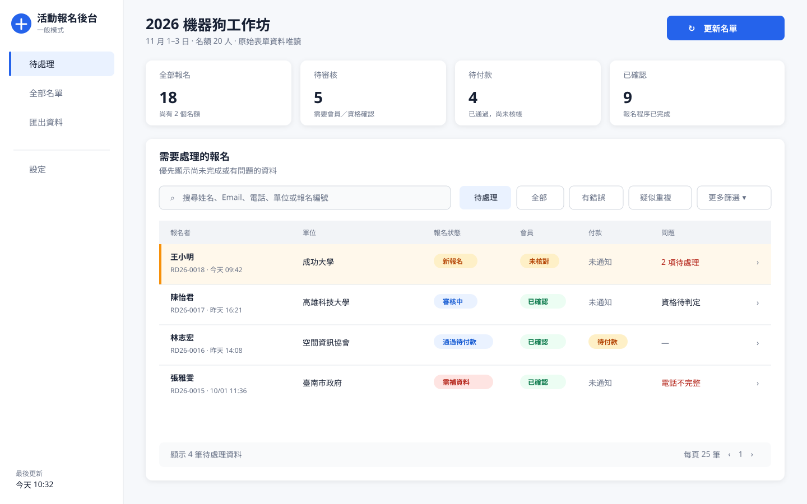
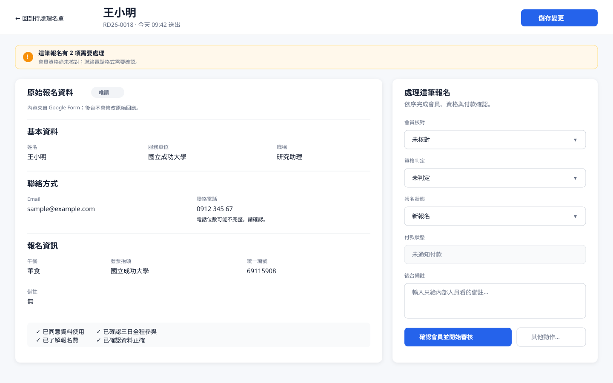
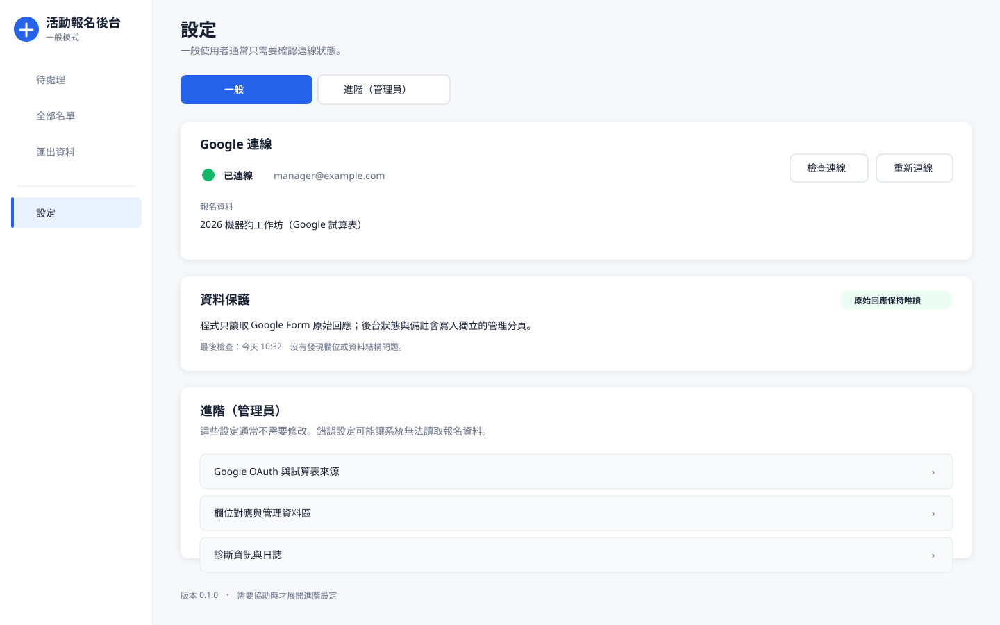

RegistrationAdmin UI 改版參考
建議組合：Microsoft Lists 的名單、Airtable Record Review 的詳細頁，以及獨立的進階設定。
草圖是資訊架構參考，不要求逐像素照抄。一般模式不得出現 Google Sheet 內部名稱或技術欄位。
1. 一般模式：待處理名單
一進程式就看到工作，而不是先看到設定或複雜儀表板。

2. 單筆報名：原始資料與後台操作分開
左側原始答案唯讀；右側只放這筆資料可做的決定。

3. 設定：日常與工程選項分層
一般使用者只需知道是否連線；OAuth、欄位映射與診斷全部收合。
